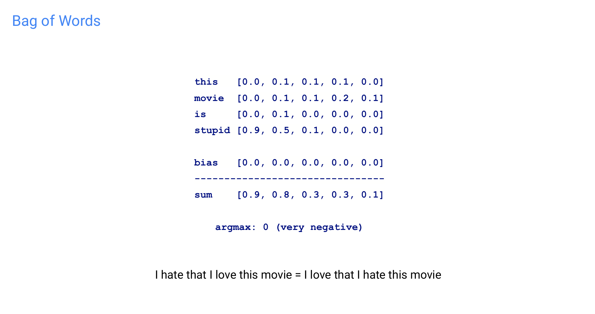
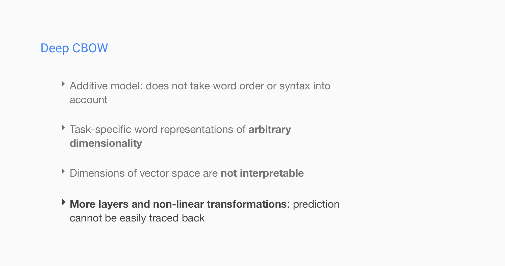
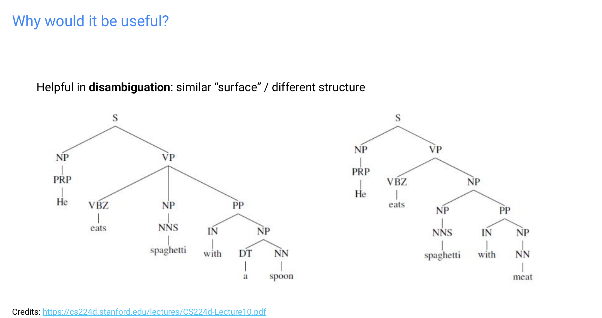

1 Title
2 Compositional semantics

3 Compositional semantics alongside syntax
4 Non-trivial issues with semantic composition
5 Non-trivial issues with semantic composition

6 Issues with semantic composition
7 Modelling comvositional semantics

8 Title
9 Compositional distributional semantics

10 Vector mixture models

11 Additive and multiplicative models

12 Lexical function models
13 Lexical function models

14 Learning adjective matrices
15 Learning adjective matrices
16 Title
17 Title
18 Title

19 Title

20 Task: Sentiment classification of movie reviews

21 Words (and sentences) into vectors
22 Sentence representation: A (very) simplified picture

23 Title

24 Dataset: Stanford Sentiment Treebank (SST)

25 Binary parse tree: One example

26 Title

27 Models

28 First approach: Sentence + Sentiment

29 Title

30 Title

31 Bag of Words
32 Bag of Words

33 Turning words into numbers
34 One-hot vectors select word embeddings

35 Title
36 Title
37 Continuous Bag of Words (CBOW)
38 Recall: Matrix Multiplication

39 What about this?
40 What about this?

41 Title
42 Title

43 mn. PRL AT

44 What about this?

45 Question
46 Title

47 Deep CBOW with pretrained embeddings
48 Title

49 Recap: Training a neural network
50 Cross Entropy Loss
51 Softmax

52 Title
53 Introduction: Recurrent Neural Network (RNN)
54 Introduction: Recurrent Neural Network (RNN)
55 Introduction: Recurrent Neural Network (RNN)

56 Introduction: Unfolding the RNN
57 Introduction: Making a prediction
58 Introduction: The vanishing gradient problem
59 Introduction: The vanishing gradient problem

60 What about this?
61 RNN vs ANN

62 Title

63 Long Short-Term Memory (LSTM)

64 LSTM: Core idea
65 LSTMs
66 LSTM cell
67 LSTM: Cell state

68 LSTM: Forget gate

69 LSTM: Candidate cell
70 LSTM: Input gate
71 LSTM
72 LSTM: Output gate

73 Long Short-Term Memory (LSTM)
74 LSTMs: Applications & Success in NLP

75 Title
76 QA RFAR ARR PpARnPpaAanantatiannaiasnthkh AIAILA

77 Second approach: Sentence + Sentiment + Syntax
78 Exploiting tree structure

79 Why would it be useful?

80 Constituency Parse
81 Recurrent vs Tree Recursive NN
82 Tree Recursive NN

83 Practical II data set: Stanford Sentiment Treebank (SST)
84 Tree LSTMs: Generalize LSTM to tree structure

85 Tree LSTMs
86 Child-Sum Tree LSTM

87 Child-Sum Tree LSTM

88 N-ary Tree LSTM

89 N-ary Tree LSTM

90 N-ary Tree LSTM

91 LSTMs vs Tree-LSTMs
92 Title

93 Title

94 Building a tree with a transition sequence
95 Transition sequence example

96 Transition sequence example

97 Transition sequence example
98 Transition sequence example

99 Transition sequence example
100 Transition sequence example

101 Transition sequence example

102 Transition sequence example

103 Title

104 Transition sequence example (mini-batched)

105 Transition sequence example (mini-batched)
106 Transition sequence example (mini-batched)

107 Transition sequence example (mini-batched)
108 Transition sequence example (mini-batched)
109 Transition sequence example (mini-batched)

110 Optional approach: Sentence + Sentiment + Syntax + Node-level sentiment
111 Title

112 Recap
113 Title

114 Input
115 Recap: Activation functions
116 Introduction: Intuition to solving the vanishing gradient
117 Introduction: A small improvement
118 Child-Sum Tree LSTM